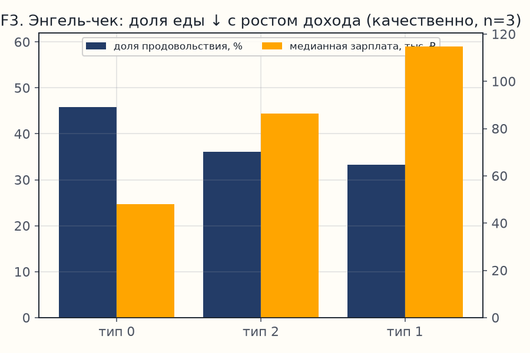
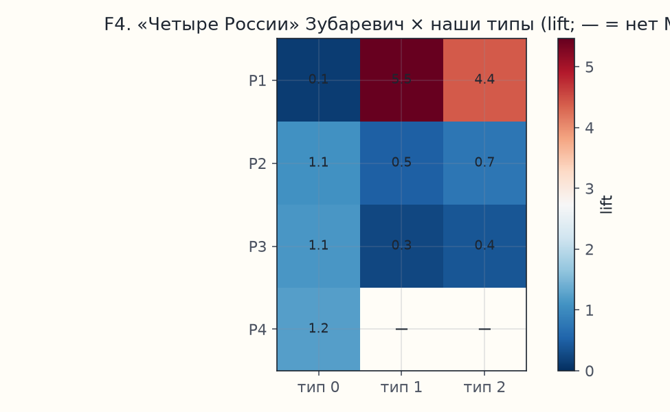
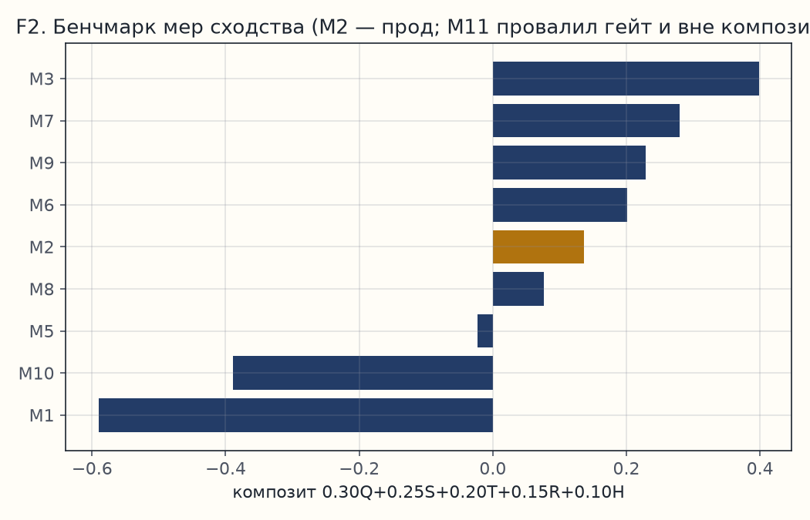
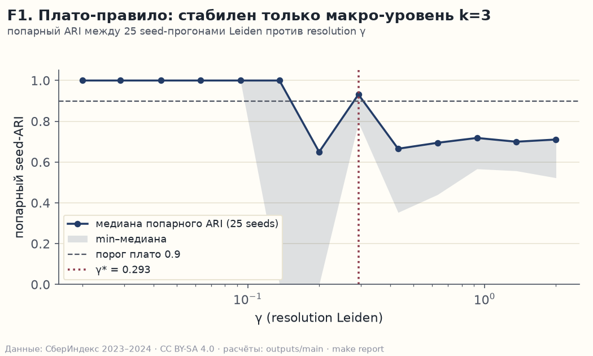
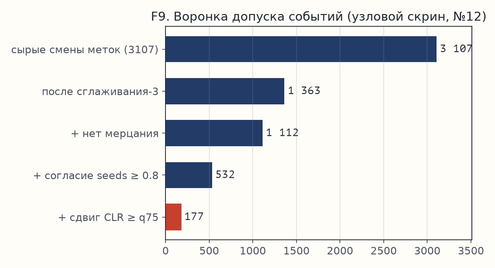
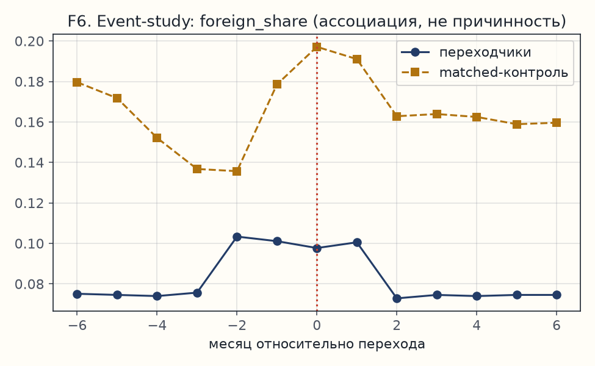
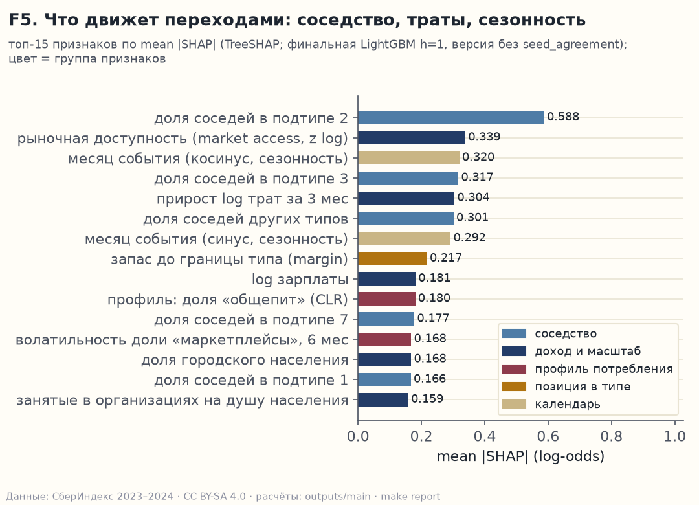

СберИндекс 2026 · Кластеризация · Конкурсная работа
Три потребительских типа России: структура сверхинертна, переходы редки — и доказуемы
2 016 муниципальных образований × 24 месяца безналичных трат.
Протокол зафиксирован до прогонов (предрегистрация, тег prereg-v1),
число типов выбрано по устойчивости разбиений, а не «на глаз»;
все 15 поправок к собственному протоколу опубликованы.
Переходы между типами допускаются только с доказательством сдвига профиля —
177 из 3 107 кандидатов (173 события одного сезонного экскурса + 4 рождения типов).
Типы безналичной России · СберИндекс 2026Маршрут исследования · Гипотезы и отказыЛИСТ 2 / 13
Восемь гипотез доведены до проверки — четыре убиты нами же, а не жюри
Здесь — ход мысли, а не только финиш: каждая строка читается «думали → проверили → что вышло». Полная хроника поворотов — журнал из 15 отклонений (PREREG_DEVIATIONS.md); протокол зафиксирован до первого прогона (тег prereg-v1).
Гипотеза
Проверка
Итог
Сходство рядов — по сырым корреляциям
медиана r = 0,906 по 2 031 120 парам: все ряды растут вместе с ценами
отказ → сходство только по остаткам после вычитания общего месяца (−0,006)
Обучаемый граф (M11) сильнее ручного правила
при перезапусках совпадает 23% рёбер; один узел-хаб собрал 2 015 связей из 2 016
отказ → гейт устойчивости обязателен; прод — простое правило
Лучшая мера бенчмарка — лучшая опора типологии
M3 выиграла бенчмарк (0,398), но стабильного разбиения на ней нет вовсе (k=1)
опровергнута → типология на M2; «мера ≠ опора» — находка
Одного прогона Leiden достаточно
разные seed-прогоны расходятся: совпадение разбиений 0,44–0,72
отказ → консенсус 25 прогонов: совпадение 0,93
Переходы — это «волна маркетплейсов»
у типа-экскурса доля маркетплейсов ниже, чем у периферии
отказ → «сезонный экскурс»: 177 = 173 события + 4 рождения типов
Моногорода — отдельный потребительский тип
перевес над случайностью 1,14×; 177 из 190 сидят в периферийном типе
не подтвердилась → отрицательный результат опубликован
Бустинг предскажет переходы лучше простого правила
на горизонте 1 мес простое правило выигрывает у бустинга (0,051 против 0,029)
частичный отказ → публикуем простое правило, числа — на листе 11
Конвейер чист от утечек данных
тест-приманка поймал признак, знавший ответ (согласие seed-прогонов)
Три типа безналичной России: периферия, сервисные ядра, Северо-Запад
Каждый тип — понятие с описанием: какие территории входят и чем отличаются (три независимых описателя — правило вкладов Миркина, дерево решений, SHAP-важности признаков; их согласие публикуется). Имя тип получает, только если покрывает ≥ 60% его территорий и встречается там ≥ 2 раз чаще, чем в среднем по стране (протокол именования); подтипы — с пометкой пониженной стабильности.
СВЕРЕНО · ПРОТОКОЛ ИМЕНОВАНИЯ
Карта типов · 2 016 МО · размер ∝ населению
Периферийная Россия1 654 МО · 80,0 млн жит.
Зарплата ≈ 48 тыс. ₽; доля продовольствия 45,9%; общепит 2,6%. Маркетплейсы 14,0% — не ниже городов.
Кому и что: региону — бенчмарк «свой к своим»; банку — где безналичное проникновение ещё впереди.
Тип по исключению: протокол честно отказал всем категорийным именам — ни одно не покрывает тип (лучший кандидат: 40% территорий при перевесе 1,2×).
Сервисные городские ядра196 МО · 21,8 млн жит.
Москва+МО, центр. Зарплата ≈ 115 тыс. ₽; общепит 7,0%; уровень трат ×2 к периферии.
Кому и что: банку — зрелые рынки: рост через сервисную долю, не проникновение.
Северо-Запад166 МО · 11,9 млн жит.
СПб + Ленобласть, Карелия, Новгород, Псков, Калининград, Мурманск. Зарплата ≈ 86 тыс. ₽ при тратах ниже ядер.
Кому и что: региону — отдельный эталон Севера, не сравнение с Москвой.
Согласие трёх описателей 0,23 из 1,00 — портрет спорный, помечено в паспорте.
«Россия-1» Зубаревич раскалывается на два типа — моногорода не выделяются вовсе
Типология проверена независимыми списками. Главная новизна: агломерационная Россия не едина по безналичному профилю — 89% «России-1» делятся между ядрами и Северо-Западом (в 5,5 / 4,4 раза чаще случайного уровня).
Энгель-градиент по типам

Честная оговоркаSpearman = −1,00 при n=3 типах: точный p = 1/3. Это sanity-check порядка (еда 45,9→36,1→33,3% против зарплат 48→86→115 тыс. ₽), не статистическое доказательство.
«Четыре России» × наши типы (lift)

Моногорода не отделяются (перевес над случайным всего 1,14×; 177 из 190 — в периферии): моногород — институциональный, а не потребительский портрет. (Совпадение с числом переходов — 177 — случайное.)
Татарстан 43/43 в периферии при зарплате на уровне РФ (+4,8%): безналичные траты на 18% ниже.
Азнакаевский р-н (нефтяной): зарплата +31% к медиане своего типа — профиль при этом периферийный. Зарплата ≠ безналичное потребление.
Сопоставимость вместо «среднего по региону»: тип — это бенчмарк, внутри которого МО сравнимы честно.
Все ряды растут вместе с ценами: медианная корреляция сырых приростов 0,906 по 2 031 120 парам — сеть из них тривиальна. Поэтому из каждого месяца вычитаем среднее по стране (демеанинг): медиана корреляции падает до −0,006, и сходство становится содержательным.
Значения — рубли на жителя в месяц (per-capita из источника; население второй раз не делим).
6 долей категорий → лог-отношения CLR (стандарт для долевых данных: сравниваем пропорции, а не рубли); нулей в данных нет, поправки на ноль не нужны. «Прочее» = 1−Σ5, медиана 28% — сигнал, не мусор.
Типы безналичной России · СберИндекс 2026Построение сетиЛИСТ 6 / 13
Правило рёбер — формальное и проверяемое: 12 900 рёбер, ноль изолятов, одна компонента
Сходство двух территорий = корреляция их остатков. Каркас кандидатов: 10 ближайших по сходству + страховочная тройка на узел (чтобы никто не остался без связи); дальше — фильтр значимости BH-FDR, который удерживает долю ложных находок при 2 031 120 одновременных проверок (q = 0,05). География — отдельным слоем: вес затухает с автодорожным расстоянием (exp(−d/150 км)). Список рёбер, перестроенных по подпериодам, почти не пересекаются (3%) — помесячная топология нестабильна, поэтому каркас строится один раз на всех данных, а месячная динамика живёт в весах: один набор рёбер + 24 вектора весов.
Как строится ребро — четыре шага, каждый проверяем
11 мер сходства + 3 анти-примера прогнаны через предрегистрированный гейт (пропускной тест: устойчивость к пертурбациям рёбер).
Обучаемый граф (M11) провалил гейт: при перезапусках на подвыборках совпадает лишь 23% рёбер; один узел-хаб собрал 2 015 связей из 2 016. Сложность не купила топологию.
Лаговые корреляции и DTW (сравнение рядов с допуском сдвига по времени) — тоже в бенчмарке (M4/M6/M7): полная ширина критерия, не одно правило.
Сеть проста по правилу и строга по фильтру — каждое ребро объяснимо и перепроверяемо.
M3 выиграл бенчмарк мер (0,398 против 0,280) — и схлопнул типологию в один кластер
Композит из пяти опор, зафиксированных до прогонов: качество кластеров (ICVI), устойчивость к перезапускам, согласие между месяцами, восстановление истины на синтетике, структурная ценность. Отрыв M3 больше ошибки измерения. Но правило устойчивости — «плато»: разбиение обязано воспроизводиться при перезапусках — на графе M3 не находит ничего, кроме тривиального k = 1. Прод-типология — на сильнейшей мере, прошедшей этот гейт (M2).
Композит мер (красным — не прошли гейт)

Отрыв M3 = 0,118 при ошибке измерения 0,013 (парный бутстрэп, 1 000 перепарываний); проверка весов: при 2 000 случайных перетасовок весов композита M3 — самый частый победитель (47% случаев) — вывод не куплен весами.
M2 (прод) = одна корреляция остатков итогового ряда; M3 = среднее пяти покатегорийных корреляций остатков (в z-пространстве). M2 — пятая по композиту, но совпадение разбиений при перезапусках 0,942 — лучший баланс из прошедших гейт.
Находка: измерительное качество меры и структурная устойчивость — разные свойства сети. Обе таблицы публикуются полностью.
Честная оговоркаSBM-подобное ядро синтетики даёт сетевым мерам домашнее преимущество — оговорено в отчёте; LFR-реплики после retry-провалов частично из 5 графов (не маскируется).
Типы безналичной России · СберИндекс 2026Сравнение методов · ICVIЛИСТ 8 / 13
Число типов — не «локоть на глаз», а правило устойчивости: стабилен только макро-уровень k = 3
Девять базисных методов четырёх семейств (атрибутивные, сетевые, атрибутированные, спектральные) плюс консенсусный слой поверх них × шесть внутренних индексов качества кластеров — ICVI: силуэт SW, Калински–Харабаш CH/N, S_Dbw, изолируемость AVI, унифицируемость AVU, модулярность MQ. Вычисления сверены с эталонной библиотекой Pattern до 16-го знака. Победитель композита — spectral_knn; в прод идёт Leiden-консенсус (Leiden — метод поиска сообществ в сети; консенсус = голосование 25 перезапусков): единственный, кто совмещает авто-k (сам выбирает число типов) с плато-стабильностью k=3 («плато» = диапазон силы детализации γ, где разбиение воспроизводится). Обе версии композита публикуются.
СВЕРЕНО · PATTERN ДО 1e−16
Гейт устойчивости: совпадение разбиений (ARI) при 25 перезапусках по силе детализации γ

Топ композита методов (полный — table_methods.parquet)
метод
k
NMI на синтетике
композит
spectral_knn
6
0,895
0,868
kefrin
6
0,900
0,760
leiden_consensus (прод)
3
0,909
0,679
kmeans
6
0,783
−0,047
Одиночный Leiden при каждом перезапуске даёт другой ответ (совпадение разбиений ARI 0,44–0,72; ARI = 1 при тождественных) → консенсус из 25 прогонов: совпадение 0,93 при силе детализации γ из предрегистрации.
Прод-типология против 200 случайных разбиений тех же размеров: отрыв в единицах разброса случайных (z) — SW 5,4; CH/n 453; S_Dbw −20; AVI 174; MQ 263. Случайные разбиения не дотягивают ни по одному индексу.
k-means (k=6) почти догоняет консенсус по устойчивости (0,9136 против 0,9178) при 110× скорости. Но сам число типов не выбирает, и сетевой чистоты (MQ против случайного нуля) не даёт — консенсус остаётся продом.
Честные оговоркиAVU при k = 3 почти константен для любого разбиения (разброс 200 случайных ≈ 2,3·10⁻¹⁶) — индекс неинформативен на малом k, его z = 0,47 не интерпретируем. Родственные пары «индекс × метод» помечены флагами: модулярность MQ роднится с сетевыми методами, силуэт — с k-means.
outputs/main/table_methods.parquet · plateau_table.parquet · icvi_null.parquetкритерии: методы 15% · ICVI 15%
Типы безналичной России · СберИндекс 2026Динамика типологииЛИСТ 9 / 13
Из 3 107 смен типа доказуемы 177 — инертность сильнее помесячного шума
Гейт эволюции считает разницу, а не похожесть: соседние месяцы различаются на 0,12 (= 1 − 0,876), а та же типология при случайном потрясении 5% рёбер — на 0,34 (= 1 − 0,6553). Разница месяцев меньше шумовой во всех 23 парах → помесячная эволюция недоказуема; это доказанная сверхинертность, а не отсутствие событий: переход допускается, только если метка не мерцала туда-обратно, 25 перезапусков согласны ≥ 80%, а сдвиг профиля трат сильнее, чем у 75% всех территория-месяцев. Метки динамики живут в своём реестре (помесячные типы 0–8), поверх — макро-слой k = 3; карта между пространствами опубликована (type_id_map).
177 ДОКАЗУЕМЫХ
Событийный слой: воронка допуска

Устойчивость типологии на горизонтах 1/3/6 мес — средний ARI 0,88/0,88/0,86 (медианы 0,90–0,92): «кто ты» меняется редко.
177 = 173 события одного сезонного экскурса (тип 4) + 4 рождения типов — не «177 историй», а одна волна + четыре дебюта, и это сильнее: структура динамики читается.
Порог не подогнан: при строгом (сдвиг сильнее, чем у 95% территория-месяцев) — 27 безусловных фактов; при нашем (75%) — 177; при мягком (50%) — 276. Нарратив строим от ядра.
Инертность — свойство системы; редкость переходов (0,37% = 177 из 48 384 территория-месяцев) — свойство экономики. Каждый допущенный переход верифицирован сдвигом профиля.
outputs/main/stability.json · events_all/admitted.parquet · events_sensitivity.csvпубличная динамика — только smoothed-метки
У каждого перехода — имя и сдвиг профиля; ассоциация, не пророчество
177 карточек переходов с драйверами в сырых единицах — рублях и долях (важности TreeSHAP) — плюс event-study ±6 мес против похожих территорий без перехода: профиль переходчиков сближается с контрольной группой за 2–3 месяца до события, после — разрыв не закрывается (n=177, различия внутри 95% доверительного интервала — ассоциация, не причинность). Предсказуемость — отдельный вопрос, и ответ честный: лист 11.
Event-study: профиль до/после перехода (matched-контроль)

Балтайский (Саратовская обл.): вероятность перехода в топ-2% по модели ещё до события; Черноярский (Астраханская) — в топ-22%. Предсигнал существует — но слабый (лист 11).
Поселение Киевский (Новая Москва): рождение нового типа 2023-12 — топ-драйверы карточки: соседство с типом-источником (+3,9) и сезонность (+2,3), дальше зарплата и маркетплейс-динамика.
Тип 4 (сезонный экскурс): 202 → 537 → 174 МО → слит в тип 0; из него же родился тип 7.
Канал 4→0 в event-study — без контрольной группы: пустая панель показана как результат, а не скрыта.
Бустинг не обыграл простое правило — публикуем простое, а радар подписываем «непроверено»
Проверка строго по времени: обучение только на прошлом, экзамен на будущем, с буфером-эмбарго. Метрика — PR-AUC (качество списка подозреваемых при редком классе); рядом всегда уровень бесплатного угадывания: 0,018 на горизонте 1 мес, 0,031 — на 3 мес. Итог на горизонте 1 мес — ничья между простым и сложным: в среднем по выборке лидирует логит на 5 признаках (0,051 против 0,029 у бустинга), внутри отдельных месяцев — бустинг; по заранее зафиксированному правилу (§2.3 спеки) публикуем самое простое — margin-rank: ранг по «запасу близости» (насколько территория глубже сидит в своём типе, чем близка к чужому; кто на границе — кандидат на переход). Признак, случайно знавший ответ (согласие seed-прогонов), пойман нашим же тестом-приманкой и удалён; бустинг без него остаётся движком радара и SHAP-профилей.
Топ-15 драйверов (TreeSHAP, модель без утечки)

На горизонте 3 мес бустинг выходит вперёд: 0,062 против 0,044 у простого правила и 0,031 у угадывания по частоте — вдвое выше базы, но абсолютная сила скромная: переходы редки. По заранее зафиксированному правилу продуктом идёт простое правило, а бустинг без утечки остаётся движком радара и SHAP-профилей; оба числа публикуются, вердикт — в model_metrics.json.
Радар смены типа на 2024-12: 202 МО в топ-дециле, у всех unverified=true — января 2025 в данных нет, верифицировать нечем. Таргет радара — любая смена метки (1 043 в обучении), шире 177 доказуемых переходов. Скор дискретен: порядок внутри дециля — не ранг.
Цена ошибки: пропуск перехода дороже ложной тревоги — порог радара есть функция потерь, не гиперпараметр.
Простая модель опубликована не как поражение ML, а как дисциплина отбора: усложнение обязано покупаться числом.
outputs/main/model_metrics.json (verdict, обе версии) · radar_watchlist.parquetкритерий: простота 15%
Вся Россия сходится в один клуб по маркетплейсам — и остаётся тремя типами
Тест сходимости Phillips–Sul (наша реализация log-t теста: сближаются ли траектории территорий во времени): по маркетплейсам+продовольствию — один глобальный клуб, все три критерия пройдены (статистика log-t = +0,18 при пороге −1,65; дисперсия и наклон сходимости — в норме). Клубы не совпадают с типами (совпадение ≤ 0,06 по ARI): сходимость идёт внутри типов, не стирая их.
Лаг-лидерство (кто за кем повторяет динамику с задержкой): 4 437 направленных связей из 2 031 120 пар. Нуль-модель — ряды с перемешанными фазами (та же сезонность, убитая синхронность): связь считаем при корреляции ≥ 0,834, а 99-й перцентиль случайных — 0,680.
Топ-«маяки» — периферия: средняя исходящая степень типа 0 = 2,52 против 0,31 у метрополисов.
Рёбра лидерства не локальнее случая (1,3% против 2,5% в пределах 150 км) — лидерство не про соседство.
Синхронность с задержкой ≠ причинность: общий толчок (сезон, новость) может рисовать ту же картину — читаем «кто за кем следует», а не «кто кого двигает».
Глубже всех в поле — не «уникально»: у одного конкурента есть зачаточный lead-lag по типам; признаём это в отчёте.
Маркетплейс-волна — общероссийская сходимость; типология остаётся структурой различий, не уровней.
Топ-«маяки» поимённо · исходящая степень в графе лидерства
муниципалитет
регион
out-deg
Тазовский р-н
ЯНАО
87
Кочковский р-н
Новосибирская обл.
85
Сургутский р-н
ХМАО — Югра
49
Новоселицкий м.о.
Ставропольский край
32
г.о. Буй
Костромская обл.
29
Абанский р-н
Красноярский край
26
Маяки — преимущественно периферия (средний out-deg типа 0 = 2,52 против 0,31 у ядер): сигнал идёт не из столиц. 1 клуб сходимости по маркетплейсам+продовольствию (3/3 критерия); клубы ортогональны типам (ARI ≤ 0,06).
outputs/main/convergence_summary.json · clubs_x_types.csv · lead_summary.jsonсобственный порт log-t (без R)
Восемь ограничений названы до ваших вопросов — каждое число воспроизводимо одной командой
Ограничения: окно 24 мес; нет 2025 на уровне МО; k=3 — потолок стабильности (подтипы с пометкой); гейт 23/23 — динамика только узловая; безналичное ≠ все расходы; драйверы умеренны; 174 МО исключены + 10 островов на fallback; устойчивость k=3 к вариациям правила рёбер (kNN-k, q, λ=150 км, гео-слой) не пересчитана — записано в долг честно (журнал, №14).
MAKE REPRODUCE
Предрегистрация до всех прогонов (тег prereg-v1) + журнал из 15 отклонений, включая реестры расхождений, найденных независимыми аудитами (19 проверяющих 06–07.10, комиссия 09.10).
make reproduce: данные → панель → граф → кластеры → динамика → бенчмарк → интерпретация → отчёт; снапшот конфига и лог каждого прогона.
158 тестов зелёные; чистый клон поднимается; таблица «артефакт → команда → run» в outputs/main/README.md.
Числа отчёта генерируются кодом из артефактов (шаблон + numbers.json); константы построения сети — из лога прогона графов (graph_summary.json); два независимых аудита чисел пройдены (07.10, 09.10).
С 36 месяцами данных: out-of-time на 2025-м, log-t с окном 24 вместо 16, мощнее событийный слой.
15отклонений в журнале — включая найденные аудитами после прогонов
158тестов pytest, все зелёные
1 командаmake reproduce — от сырых данных до отчёта
PREREG.md · PREREG_DEVIATIONS.md · Makefile · outputs/main/README.mdданные CC BY-SA 4.0 · код MIT